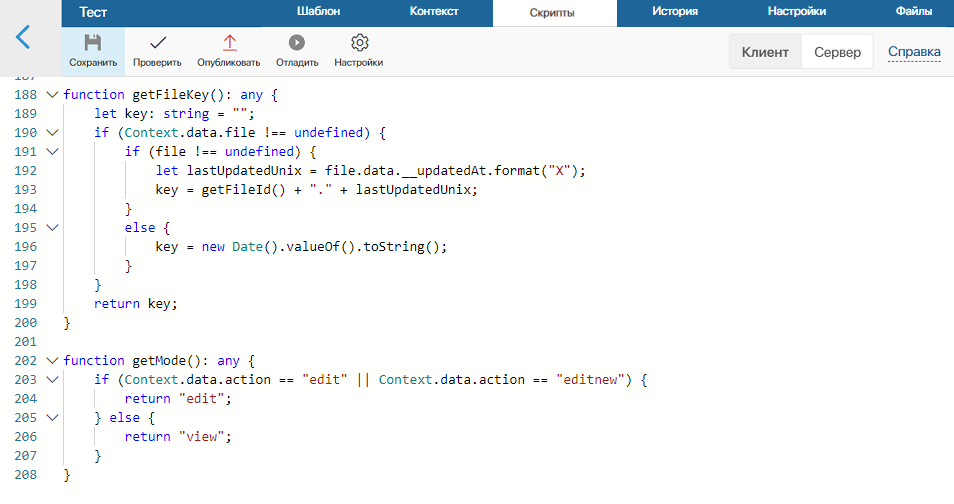

Виджеты на странице можно сделать интерактивными с помощью скриптов.
Скрипт — это код, который описывает поведение виджета в тех или иных условиях. В коде используются переменные, чаще всего — переменные типа Выбор «да/нет», так как большинство действий виджетов, например, скрыть, отобразить и т. п., привязано к их значениям.
Скрипты могут быть:
- клиентскими — выполняются в браузере пользователя;
- серверными — обрабатываются на сервере ELMA365;
- смешанными — выполняются на стороне клиента и вызывают серверные методы.
Серверные скрипты выполняются без ограничения доступа к элементам приложения. Клиентские — с ограничением. Например, при попытке загрузить элемент, к которому у текущего пользователя нет доступа, клиентский код вернёт ошибку, а серверный выполнится успешно. Аналогично при получении списка элементов, на стороне клиента вернутся только те, к которым есть доступ, на стороне сервера — все.
В серверных скриптах можно использовать дополнительные параметры. Они позволяют донастроить виджет и внести изменения в скрипт без перепубликации. Подробнее об этом вы можете прочитать в статье «Дополнительные параметры».
Как правило, скрипты для виджетов не требуют больших мощностей для реализации, и мы рекомендуем писать их на стороне клиента.
Скрипты пишутся на языке TypeScript. Работа с ними осуществляется в дизайнере интерфейсов на вкладке Скрипты.
начало внимание
Использование констант Global или Namespace в скриптах ограничивает экспорт компонентов системы. Подробнее об этом читайте в статье «Глобальные константы в скриптах».
конец внимание

Внешние зависимости в клиентских скриптах
В клиентских скриптах виджета вы можете обращаться к библиотечным и пользовательским функциям на языке Javascript. Для этого перейдите в дизайнере на вкладку Файлы. Загрузите один или несколько файлов в формате .js с кодом функций или библиотек. На вкладке Скрипты в исходном коде скрипта подключите добавленные файлы с помощью инструкции import.
Например, чтобы подключить библиотеку jQuery, перейдите на вкладку Файлы и загрузите файл с актуальной версией библиотеки, например, jquery-3.6.0.min.js. Перейдите на вкладку Скрипты в раздел клиентских скриптов и в начале скрипта добавьте инструкцию:
import $ from "jquery-3.6.0.min.js";
Теперь в коде скрипта вы сможете обращаться к функциям библиотеки.
Также в клиентских скриптах виджетов поддерживаются функции, которые вызываются автоматически в процессе отображения виджета и при сохранении формы. Подробнее об этом читайте в статье «Системные функции виджетов».
Получение данных из виджетов
Способ получения данных из контекста в скриптах зависит от того, где настраивается виджет.
Виджеты интерфейсов
Если вы настраиваете интерфейс и создаёте пользовательский виджет, обращаться к его контексту следует с помощью константы Context, например:
Context.data.string_1 = 'string value';
К системным виджетам, расположенным на страницах, также необходимо обращаться через Context.
Виджеты на формах
Доступ к виджетам, расположенным на форме приложения, осуществляется с помощью константы ViewContext, так как константа Context в этом случае отвечает за контекст приложения:
const itemName = Context.data.__name;
ViewContext.data.string_1 = `Название ${ itemName }}`;
Вызов серверного метода из клиентского скрипта
Не все операции могут выполняться только на стороне клиента или только на сервере. Иногда требуется гибридное решение. В этом случае можно реализовать скрипт на стороне клиента, который будет выполнять часть работы, а затем вызывать скрипт на сервере. Чаще всего такой подход используется для реализации логики блокировки интерфейса и уведомления пользователя.
Например, на сервере может быть скрипт, который выполняет обработку данных и может обращаться к внешним сервисам:
async function DoSomeWork() : Promise<void> {
// Далее прописывается логика серверного скрипта. Вы можете использовать внешние вызовы через `await`
let response = await fetch('https://my-service.mycompany.com/getmydata?token=' + Context.data.secureToken);
Context.data.mySecureData = await response.text();
}
В коде на стороне клиента можно вызвать этот метод, используя свойство Server.rpc:
async function onButtonClick() : Promise<void> {
ViewContext.data.blockUI = true;
await Server.rpc.DoSomeWork();
ViewContext.data.blockUI = false;
}
Обратите внимание, между сервером и клиентом данные передаются только через Context или ViewContext. Метод на стороне сервера должен быть без параметров и иметь возвращаемый тип Promise. Только тогда он появится в автодополнении в клиентском скрипте.
Вызывать серверные методы можно также с помощью вложенных виджетов, например, Кнопка или Код. Подробнее об этом читайте в справке ELMA365 TS SDK.
Отслеживание событий в приложениях через клиентский скрипт
Виджет на странице может отображать данные по элементам приложения в реальном времени. Например, вы можете настроить отчёт, в котором без обновления страницы отображаются актуальные статусы элементов и новые записи в приложении.
Для этого в виджете отчёта подпишитесь на события создания, удаления и изменения элементов и задайте для них функции‑обработчики. Это можно сделать с помощью клиентского скрипта.
Подписаться на событие
Для создания подписки на событие в приложении откройте вкладку Скрипты, перейдите в раздел клиентских скриптов и напишите скрипт:
await System.events.subscribe()
// Подписка на событие создания нового элемента в приложении
.onAppItemCreate(Context.fields.order.app, async (events) => {
const event = events[0];
const order = await event.data.fetch();
// Обновление данных отчёта
updateReportWithNew(order);
},
{
debounce: 0
})
// Подписка на событие изменения определённого элемента, в том числе смену его статуса
.onAppItemUpdate(item, function(e) => {}, { buffered: 2 })
// Подписка на событие удаления определённого элемента
.onAppItemDelete(item, function(e) => {}, { debounce: 0 })
.all();
Основные параметры:
- приложение или элемент, по которым отслеживаются события;
- обработчик события — пользовательская функция, которая запускается при наступлении события.
Для оптимизации производительности можно также использовать необязательные параметры — опции обработчика:
buffered— укажите, сколько событий будет накапливаться, прежде чем они будут обрабатываться. По умолчанию 1;debounce— задайте максимальную частоту вызова обработчика в миллисекундах. Обратите внимание, если за установленное время получено больше событий, чем указано вbuffered, обрабатываются последние из них, а более ранние игнорируются. Для событий создания и удаления рекомендуется устанавливать значение 0, чтобы обрабатывались все элементы. Значение по умолчанию — 50 мс.
Отключить обработчик
Подписки на события активны, пока открыта страница с виджетом, для которого они настроены. При переходе на другую страницу они автоматически отключаются.
Вы также можете отключить обработчик события, когда использовать его больше не нужно. Для этого используйте в клиентском скрипте следующие методы:
// Отключение обработчика `onDeleteHandler`, который использовался для события удаления элемента
await System.events.unsubscribe().onAppItemDelete(item, onDeleteHandler).all();
...
// Отключение всех обработчиков для события изменения элемента
await System.events.unsubscribe().onAppItemUpdate(item).all();
...
// Отмена всех подписок на события в рамках виджета
await System.events.unsubscribe().all();